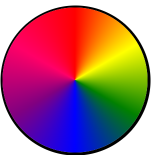
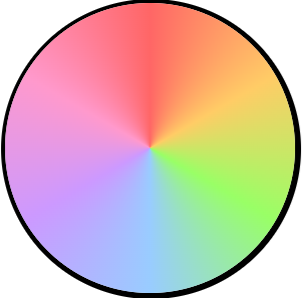
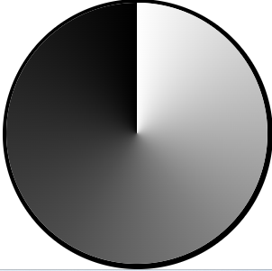

Color Wheels
CSS Gradients
By Atlas Mata
Instructions: in this jigsaw you will make 3 color wheels as depicted below.
-
First you will make a regular color wheel:
-
Use 7 named colors.
-
Begin and end with red.
-
The second wheel will be a pastel wheel:
-
Use 7 hex colors.
-
Sisters, not twins (not exact match).
-
The third wheel will be grayscale.
-
Use 6 shades, mix of named and hex.
-
Start with white and end in black.
-
Grayscale shades should use hex.


